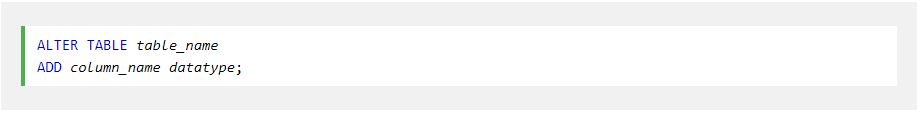
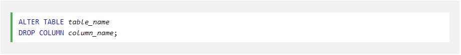
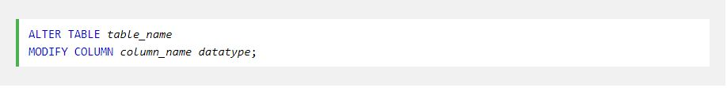

The ALTER TABLE statement is used to add, delete, or modify columns in an existing table.
The ALTER TABLE statement is also used to add and drop various constraints on an existing table.
To add a column in a table, use the following syntax:
To delete a column in a table, use the following syntax (notice that some database systems don't allow deleting a column):
To change the data type of a column in a table, use the following syntax:
